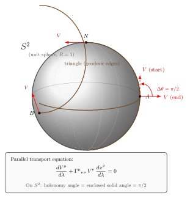

为什么"平行"在弯曲时空里有歧义?
上一节我们写下了测地线方程: 一颗自由粒子的世界线满足 $\mathrm{d}^2 x^\mu/\mathrm{d}\tau^2 + \Gamma^\mu{}_{\nu\sigma} \dot x^\nu \dot x^\sigma = 0$. 公式里那个 $\Gamma$ — Christoffel 符号 — 不是凭空冒出来的. 它的物理意义只有在我们认真追问"把一支矢量从一点搬到另一点"是什么意思之后才浮出来. 这一节就来追这个问题. 答案出乎意料: 在弯曲流形上, "平行搬运"这件事依赖路径; 路径之间的角度差直接就是空间的曲率. 这是广义相对论几何里最深的一件事, 也是最容易讲偏的一件事.
我们的策略是: 先在 $S^2$ 上做一次具体的三角形回路, 把那个 $\pi/2$ 的角偏算出来; 再回头问"平行"在欧几里得空间里和在弯曲空间里有什么差; 然后写下协变导数与平行运输的统一公式; 最后回到那次回路, 用 Christoffel 符号把 $\pi/2$ 重算一遍, 与立体角的纯几何结果对上.
一、球面上一次回路: $\pi/2$ 从哪里来
取单位球面 $S^2$ ($R=1$), 用通常的极角 $\theta$ (从北极算起, 0 到 $\pi$) 与方位角 $\phi$ (0 到 $2\pi$). 选三个点: 赤道上的 $A = (\theta=\pi/2, \phi=0)$, 同样赤道上的 $B = (\theta=\pi/2, \phi=\pi/2)$ (即 $A$ 与 $B$ 在赤道上相距 $\pi/2$), 以及北极 $N = (\theta=0)$. 这三点连成一个球面三角形, 三条边都是大圆弧:
- $A \to B$: 沿赤道走 90°, 弧长 $\pi/2$.
- $B \to N$: 沿过 $B$ 的子午线上到北极, 弧长 $\pi/2$.
- $N \to A$: 沿过 $A$ 的另一条子午线下回出发点, 弧长 $\pi/2$.
三条边各 $\pi/2$, 是一个等腰直角的"超大三角形" — 它的三个内角都是 $\pi/2$, 内角和 $3\pi/2 \gt \pi$, 这正是球面几何里 Gauss-Bonnet 定理给出的过剩角. 现在在出发点 $A$ 选一支矢量 $V$, 设它沿赤道方向 (即指向 $\hat\phi$ 方向, 也就是 $A \to B$ 的切向). 我们要做的事是: 沿这个三角形回路把 $V$ 平行搬一周, 看回到 $A$ 时它指向哪.
"平行搬运"在大圆弧上有一个简单刻画: 沿一条测地线把矢量平行运输, 等价于"保持矢量与测地线切向的夹角不变, 同时模长不变". 大圆弧是球面上的测地线 (它是球面与一个过球心的平面的交线), 所以这个刻画在我们三段路径上都成立. 让我们逐段算:
第一段 $A \to B$ (赤道弧): 在 $A$ 点, 矢量 $V_A$ 沿赤道方向, 与测地线切向夹角 $0$. 沿测地线运输, 夹角保持 $0$. 抵达 $B$ 时, $V_B$ 也沿赤道方向 (指向 $\phi$ 增大的方向). 但要注意: 在 $B$ 点, "赤道方向" 是 $\hat\phi(B)$, 而过 $B$ 的子午线方向是 $-\hat\theta(B)$ (北行); 矢量 $V_B$ 与子午线方向垂直, 夹角 $\pi/2$.
第二段 $B \to N$ (子午线上行): 在 $B$ 出发时, $V_B$ 与测地线切向夹角 $\pi/2$. 沿测地线运输, 这个夹角守恒 $\pi/2$. 抵达 $N$ 时, $V_N$ 与"从 $B$ 来的子午线"切向夹角依然 $\pi/2$ — 也就是说, $V_N$ 在北极是个水平矢量, 垂直于这条子午线指过来的方向.
第三段 $N \to A$ (子午线下行): 在 $N$ 出发, 走的是过 $A$ 的另一条子午线 (它与第二段的子午线在 $N$ 处夹角 $\pi/2$, 因为 $A,B$ 经度相差 $\pi/2$). 矢量 $V_N$ 与第二段子午线垂直, 也就是说它沿着第三段子午线 (与第三段切向平行 — 但要小心方向). 具体: 第三段切向指向"从 $N$ 离开 $A$ 方向" — 即指向 $A$. $V_N$ 与之夹角是 $0$ 还是 $\pi$? 答案取决于约定, 总之夹角是 $0$ 或 $\pi$, 与切向共线. 沿测地线运输, 矢量始终与切向共线. 抵达 $A$ 时, $V_A^{\rm new}$ 与"从 $N$ 来的子午线方向"共线 — 这个方向在 $A$ 是 $-\hat\theta(A)$, 即指北的反方向, 也就是指向北极的反方向 = 指南方向.
对照一下: 我们出发时 $V_A$ 是东向 (沿赤道指向 $B$ 的方向); 回到 $A$ 时 $V_A^{\rm new}$ 是南向. 东到南, 顺时针转了 $\pi/2$. 这就是我们要找的那个角偏:
$$ \boxed{\;\Delta\theta = \frac{\pi}{2}.\;} \tag{1} $$
这个 $\pi/2$ 不是计算出来的小修正, 它就是平行运输回到原点后矢量的真实方向差. 一个生活在球面上的二维生物, 严格按"局部不要旋转矢量"的指令把一支箭沿这个三角形拉了一圈, 回到家时箭头指向了一个完全不同的方向 — 它无从抗议, 这是几何本身的事实.
二、立体角解读: 角偏 = 围出的面积
$\pi/2$ 这个数字不是巧合. 我们的三角形三个顶点 $A, N, B$ 在球面上围出一个区域, 它就是球面上的"一卦" (1/8 球面): 其面积是
$$ \mathrm{Area}(\triangle ANB) = \frac{1}{8} \cdot 4\pi R^2 = \frac{\pi R^2}{2} = \frac{\pi}{2} \quad (R=1). \tag{2} $$
面积 $\pi/2$. 我们的角偏也是 $\pi/2$. 这不是巧合 — 这是 Gauss-Bonnet 定理的特例: 在常曲率 $K$ 的曲面上, 沿一条简单回路平行运输一支矢量, 角偏等于 $K \times A$, $A$ 是回路所围的面积. 单位球面上 $K = 1/R^2 = 1$, 所以角偏正好是面积本身. 一般地
$$ \Delta\theta = \oint_{\partial\Sigma} \omega = \int_\Sigma K \, \mathrm{d}A, \tag{3} $$
其中 $\omega$ 是联络 1-form, 右侧是 Gauss 曲率对围面积的积分. 这是几何学最古老也最优雅的式子之一 — 它说: 一支矢量绕一条回路一圈后转过的角度, 等于回路里"装着"多少曲率. 如果空间是平的 ($K=0$), 转角永远为零 — 平面上平行运输路径无关. 一旦有曲率, 角偏就把它读出来.
这一观察把"曲率"这个抽象量第一次变得可触摸: 它不是流形上的某种内禀缺陷, 而是一种沿回路积累的几何相位. 后面我们会把这个相位推广成一个张量值的对象, 这就是 Riemann 张量的诞生.
三、协变导数: 修正普通偏导, 让它变张量
球面上的故事告诉我们: "把一支矢量原方向搬走"在弯曲空间里不是一个明显的概念. 我们必须明确"什么算原方向". 这要求我们重新审视一件最基础的事: 导数.
在欧几里得平直空间里, 我们写 $\partial_\mu V^\nu$ — 矢量场的偏导. 这个量在笛卡尔坐标系下是张量分量 — 但只要换到极坐标或球坐标, 它就不再是张量了. 原因很直接: 偏导比较的是"同一个坐标值上 $V^\nu$ 的差", 但在曲线坐标里, 不同点的基矢量本身就在转 — $\hat r$ 在 $(\theta=0)$ 和 $(\theta=\pi/2)$ 是不同方向. 你比较的是分量的差, 而分量差里混杂着"基矢量自己转动"的部分. 这部分必须扣掉, 才能得到"矢量真正变化了多少".
这就引出了协变导数. 定义: 对一个 $(1,0)$ 型张量 (矢量场) $V^\nu$,
$$ \nabla_\mu V^\nu \;=\; \partial_\mu V^\nu \;+\; \Gamma^\nu{}_{\mu\lambda} V^\lambda. \tag{4} $$
右边第一项是分量在坐标方向的偏导数, 第二项是用 Christoffel 符号 $\Gamma^\nu{}_{\mu\lambda}$ 修正基矢量自身的转动. 在欧几里得平直空间里, 笛卡尔坐标下 $\Gamma$ 全为零, $\nabla_\mu = \partial_\mu$ — 所有人小学学的东西都对; 但只要换到极坐标, $\Gamma$ 就不为零了 (例如 $\Gamma^r{}_{\theta\theta} = -r$, $\Gamma^\theta{}_{r\theta} = 1/r$). 这告诉我们: $\Gamma$ 不是真正的几何量, 它依坐标系而变 — 它本身不是张量. 但组合 $\partial V + \Gamma V$ 才是张量, 这才是平直与弯曲流形的统一导数.
对一个 $(0,1)$ 型张量 (1-form) $\omega_\nu$, 协变导数符号相反:
$$ \nabla_\mu \omega_\nu = \partial_\mu \omega_\nu - \Gamma^\lambda{}_{\mu\nu} \omega_\lambda. $$
对高阶张量, 每一个上标加一个 $+\Gamma$ 项, 每一个下标减一个 $\Gamma$ 项, 系统而单调. 这套规则是 Levi-Civita (1917) 在 Ricci-Curbastro 张量分析的基础上整理出来的. 关键的几何要求是度规相容性 $\nabla_\rho g_{\mu\nu} = 0$ — "把度规也平行搬走"; 加上无挠条件 $\Gamma^\lambda{}_{\mu\nu} = \Gamma^\lambda{}_{\nu\mu}$, 就唯一确定了 Christoffel 符号
$$ \Gamma^\lambda{}_{\mu\nu} = \frac{1}{2} g^{\lambda\rho}\Big(\partial_\mu g_{\rho\nu} + \partial_\nu g_{\rho\mu} - \partial_\rho g_{\mu\nu}\Big). $$
这是上一节测地线方程里那个 $\Gamma$ 的来源, 也是这一节平行运输方程里那个 $\Gamma$ 的来源 — 它们是同一个 $\Gamma$.
四、平行运输方程: 沿一条曲线"不要旋转"
有了协变导数, 我们就可以严格定义"沿曲线平行运输". 给定一条曲线 $x^\mu(\lambda)$, 它的切向 $T^\mu = \mathrm{d}x^\mu/\mathrm{d}\lambda$. 一个矢量场 $V^\mu$ 沿这条曲线"平行" — 即它在曲线方向上的协变变化率为零 — 当且仅当
$$ T^\mu \nabla_\mu V^\nu = 0 \quad\Longleftrightarrow\quad \frac{\mathrm{d}V^\mu}{\mathrm{d}\lambda} + \Gamma^\mu{}_{\nu\sigma}\, V^\nu\, \frac{\mathrm{d}x^\sigma}{\mathrm{d}\lambda} = 0. \tag{5} $$
这就是平行运输方程. 它是一个常微分方程组 (一阶, 线性, 关于 $V^\mu(\lambda)$): 给定起点的初值 $V^\mu(0)$ 与曲线 $x^\mu(\lambda)$, 它沿曲线唯一地把 $V^\mu$ "拖" 过去. 没有曲率时 ($\Gamma = 0$ 或可整体消去), 解就是 $V^\mu$ 不变 — 这是常规的"平行". 在弯曲空间里, $\Gamma \ne 0$, 解会随着 $V$ 与基矢的相对取向而连续旋转 — 但旋转是"为了抵消基矢量自己的转动", 所以从几何角度看 $V$ 仍然是"原方向".

测地线方程是平行运输的一个特例: 让一条曲线 "把自己的切向沿自己平行运输", 即 $T^\mu \nabla_\mu T^\nu = 0$, 展开就是 $\mathrm{d}^2 x^\nu/\mathrm{d}\lambda^2 + \Gamma^\nu{}_{\mu\sigma} \dot x^\mu \dot x^\sigma = 0$ — 上一节那个测地线方程. 所以"测地线"的几何定义就是: 它的切向沿自身平行不变; 它不光是"两点间最短", 它也是"自由粒子的世界线". 弯曲时空里这两件事是同一件事.
五、不同路径, 不同结果 — 曲率即和乐
球面三角形的故事还能再深一层. 如果空间是平的 ($K=0$, $\Gamma$ 可全局消去), 平行运输就是简单的"分量保持不变"; 不同路径间没有差异, 起点搬到终点的结果只依赖端点, 不依赖路径. 这种性质叫积分可路径无关性, 或者说"和乐群是平凡的". 一旦曲率不为零, 路径之间就有差.
把这个差量化, 就得到曲率张量. 取两个无穷小路径: 先沿 $\delta x^\mu$, 再沿 $\delta y^\nu$; 或反过来先 $\delta y^\nu$, 再 $\delta x^\mu$ — 终点都到达同一处. 把同一支矢量沿这两条路径平行运输, 结果之差是:
$$ [\nabla_\mu, \nabla_\nu] V^\rho = R^\rho{}_{\sigma\mu\nu}\, V^\sigma, $$
$R^\rho{}_{\sigma\mu\nu}$ 就是 Riemann 曲率张量, 下一节的主角. 这把"曲率"严格定义成"协变导数对易子的非平凡部分" — 或者用 Cartan 的语言, 它是联络 1-form 的曲率 2-form. 曲率 $\ne 0$ 等价于"和乐 (holonomy) 非平凡": 沿任何小回路平行运输都会回出一个非恒等的旋转.
我们刚才在 $S^2$ 上看到的 $\pi/2$ 就是和乐群作用的一个具体元素. 让我们用 Christoffel 符号把这个 $\pi/2$ 重新算一遍, 验证 (5) 式与几何论证给出同一个数. 取 $S^2$ 度规 $\mathrm{d}s^2 = \mathrm{d}\theta^2 + \sin^2\theta\, \mathrm{d}\phi^2$. 非零 Christoffel 符号:
$$ \Gamma^\theta{}_{\phi\phi} = -\sin\theta\cos\theta, \quad \Gamma^\phi{}_{\theta\phi} = \Gamma^\phi{}_{\phi\theta} = \cot\theta. $$
沿赤道弧 $A\to B$ ($\theta = \pi/2$ 固定, $\phi$ 从 $0$ 增到 $\pi/2$): 切向是 $\hat\phi$. 平行运输方程 (5) 给出 $\mathrm{d}V^\theta/\mathrm{d}\phi + \Gamma^\theta{}_{\phi\phi}V^\phi = 0$ 与 $\mathrm{d}V^\phi/\mathrm{d}\phi + \Gamma^\phi{}_{\theta\phi}V^\theta = 0$. 在赤道上 $\sin\theta = 1, \cos\theta = 0$, 所以 $\Gamma^\theta{}_{\phi\phi}=0, \Gamma^\phi{}_{\theta\phi}=0$ — 沿赤道平行运输什么都不变. 出发时 $V^\phi=1, V^\theta=0$ (东向), 到 $B$ 时仍然 $V^\phi=1, V^\theta=0$. 但要警惕: 这是分量, 不是几何方向 — 在 $B$ 这点 "$V^\phi = 1$" 意味着 $V$ 沿 $\hat\phi(B)$, 在三维欧氏意义下指向 $-\hat x$ (假设 $A$ 在 $\hat x$ 方向). 也就是说嵌入到三维空间看, 起点 $V$ 指向 $\hat y$ (赤道东向), 在 $B$ 点指向 $-\hat x$ — 几何上确实是"按照局部不旋转"运过来的, 但宏观看转了 90°.
沿子午线段 $B \to N \to A$ 同样可以代 $\Gamma$ 算, 结果与几何论证一致: 矢量在 $A$ 回归后, 嵌入欧氏空间下指向 $-\hat z$ (南向), 而出发时指向 $\hat y$ (东向); 两者夹角 $\pi/2$. 与公式 (1) 完全对上.
历史上这件事是分阶段被想清楚的. 1854 年 Riemann 在 Göttingen 的就职演讲里讲了 "三角形内角和与曲率" 这件事, 但只在二维曲面上. 1917 年 Tullio Levi-Civita (Ricci-Curbastro 的学生) 正式把"平行位移 (parallel displacement)"作为高维流形上的几何概念引入, 让 Christoffel 符号有了几何本意. 1922 年 Jan Schouten 把它推广到一般仿射联络 (允许带挠率, 不一定从度规来). 1924 年 Élie Cartan 把整套结构搬到纤维丛上, 写成"联络 1-form + 曲率 2-form", 并把"和乐 (holonomy)"作为正式的群论对象 — 这就是后来规范场论 (Yang-Mills, 量子色动力学) 的几何模板. 同样的"沿回路相位"在 Aharonov-Bohm 1959 年的电磁实验里又被重新看见, 只不过那里的曲率叫"电磁场强". 物理一遍又一遍重学几何.
六、对照一组数字: 弯曲与和乐的尺度
来对一组具体数字, 让"曲率有多弯"在引力场里有个量纲感. 取地球外的 Schwarzschild 时空, $r_s = 2GM_\oplus/c^2 \approx 8.87$ mm. 一颗自由粒子绕地球公转一周, 它的自旋矢量 (用平行运输刻画) 会被拖一个角度 — 这就是测地线进动 (geodetic precession). 弱场公式给出
$$ \Omega_{\rm geo} = \frac{3 G M}{2 c^2 r}\, v \quad\Rightarrow\quad \Delta\theta_{\rm per\,orbit} \sim \frac{3\pi r_s}{r}. $$
对 GP-B 探测器轨道 ($r \approx 7000$ km), 单圈 $\Delta\theta \sim 3\pi \times 8.87\,\mathrm{mm} / 7000\,\mathrm{km} \approx 1.2\times 10^{-8}$ 弧度 / 圈, 一年累积 $\sim 6.6$ 角秒. 2011 年 Gravity Probe B 实验测到 $6.6018 \pm 0.018''$/yr — 与 GR 预言的 $6.6061''$/yr 在 0.3% 以内对上. 这就是球面三角形 $\pi/2$ 那个故事在地球轨道上的精确版本.
对照之下, 我们在 $S^2$ 上的 $\pi/2 \approx 1.57$ 弧度是个巨大角偏 — 因为我们绕的是整整 1/8 球面 $\sim 0.5$ 球面立体角. 在常曲率单位球面上 $\Delta\theta = K\cdot A$, $K=1$, $A=\pi/2$, 所以 $\Delta\theta = \pi/2$. 这个数字在弯曲度量论里是基础单位, 它告诉我们在何种意义上 $\pi/2$ 既是面积也是转角 — 这是球面几何的一个奇迹.
小结
这一节我们把上一节那个突兀的 Christoffel 符号 $\Gamma$ 落到了一个清晰的几何意义: 它是"修正基矢量自身转动"的部件, 让协变导数 $\nabla_\mu V^\nu = \partial_\mu V^\nu + \Gamma^\nu{}_{\mu\lambda} V^\lambda$ 成为真正的张量. 平行运输方程 $\mathrm{d}V^\mu/\mathrm{d}\lambda + \Gamma^\mu{}_{\nu\sigma}V^\nu \mathrm{d}x^\sigma/\mathrm{d}\lambda = 0$ 描述了"沿一条曲线把矢量原方向搬走"的精确含义; 测地线就是它的特例 (切向自己平行运输自己). 我们用 $S^2$ 上 $A\!\to\!B\!\to\!N\!\to\!A$ 的三角形回路给出了一个 $\pi/2$ 的角偏, 它正好等于回路所围球面三角形面积 $\pi/2$ — 这是 Gauss-Bonnet 定理 $\Delta\theta = \int K\, \mathrm{d}A$ 在常曲率上的演示. 不同路径给出不同结果是曲率非零的同义词; 把这个差量化就得到 Riemann 张量. 历史上 Levi-Civita 1917 年第一个把"平行位移"作为几何概念引入, Schouten 与 Cartan 把它升级到纤维丛与和乐群语言, 这是现代规范场论的几何祖先. GP-B 在 2011 年用绕地轨道把 $\pi/2$ 故事的微弱版本测到 0.3% 精度. 下一节我们就把"路径之间的差"严格写成一个张量 $R^\rho{}_{\sigma\mu\nu}$ — Riemann 曲率张量, 同时它也是"潮汐力"的几何来源.
▲